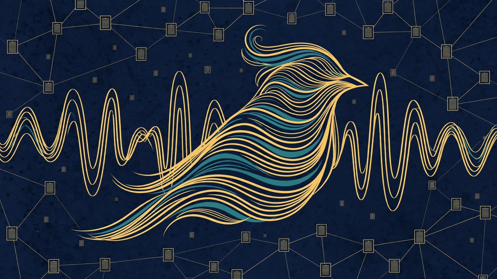

W3 Series S18 · Intended / Planned · AGI Future Foundation
BioDAO.blockchain DAO
A planned DAO for biology and bioacoustics work kept on a blockchain record — named in the April 2026 internal W3 series list, and intended, not yet formed.
AGI Future Foundation is a California Nonprofit Public Benefit Corporation, Entity No. B20260196664, Articles filed 2026-04-24, EIN assigned 2026-05-07. No IRS 501(c)(3) determination letter is in the files reviewed, so this page does not claim tax-exempt status and does not claim that any donation is tax-deductible.
What this series is
BioDAO.blockchain DAO is W3 Series S18, named in the April 2026 internal W3 series list. The name joins "Bio" — biology, living systems, and the data they produce — with "DAO" and "blockchain": a decentralised organisation keeping its records on a shared ledger. As with every series in this group, the name is the most the files reviewed say about it, and everything beyond the name on this page is a description of a planned focus implied by the name, marked as such.
One piece of live-site context can be stated, labelled as site copy: as stated on the Foundation site, "BioDao (WAVE bioacoustics)". That is the only link between this series and any existing work that the files reviewed provide. WAVE bioacoustics is therefore the natural starting point for any future discussion of what this series might do — sound, biology, and the patterns that can be read from living systems through acoustic data. But the site copy is a label, not a specification: it does not say what WAVE measures, who uses it, what data it holds, or what this series would add to it, and this page does not fill in those gaps by invention.
The planned focus, as the name implies it, would be biological work where a shared, checkable record matters: observations, samples, measurements, and analyses recorded in order, attributable to their source, and available to the people entitled to see them. Bioacoustics is one example of such work — recordings of living systems, analysed for patterns — but it is an example drawn from the site copy, not a commitment that this series will do bioacoustics and nothing else. A future mission statement would need to name the field, the data, and the users, in writing, before the series could be judged on anything more than its name.
The blockchain element, as with S17, is a direction, not a system. A ledger for biological data would need to answer who writes, who reads, how consent works for data derived from people or from places they steward, how errors are corrected, and how privacy and biosecurity rules are met. Biological data is often sensitive, sometimes identifiable, and sometimes subject to rules about where it may be stored and shared. Those questions have to be answered in a governing document, with counsel, before a single record is written — a ledger adopted first and governed later would create obligations nobody had agreed to.
The DAO element states the intended governance shape for the programme as a whole: agents operating day-to-day within human-set limits, humans deciding, signing, and moving funds through a Steward Council. No DAO vote, proposal, treasury, or token for this series is claimed on this page, and no council for this series is named. The model is planned, not operating.
Finally, a point of honesty that belongs on this page and no other in the group: the anchored Biota world is not this series. Biota.blockchain has an anchored world at coordinates -38.71260348427612, -27.248278366617797, but Biota does not appear in the April 2026 internal W3 series list and has no series number. It must not be assigned to S18, or to any series, on the strength of a similar-sounding name. If Biota and this series are ever related, that relationship would need to be written down and sourced — it cannot be inferred from the word "bio" appearing in both names.
Metaverse connection
This series has no anchored metaverse fabric yet. That sentence is the whole of what can honestly be said about its metaverse connection today: no coordinates, no fabric JSON file, no hosted assets, and no RP1 attach are in the files reviewed for this series, and this page invents none of them.
Zero worlds are live on RP1. That is the position for the whole W3 programme as of the files reviewed, not a gap peculiar to this series, and it should not be read as a failure of this series in particular — it is simply where the programme stands. A series page that claimed a live world, a set of coordinates, or a fabric URL without a file to cite would be inventing a fact, and this page will not do that.
What would be needed for this series to gain a metaverse presence is concrete and checkable: a chosen location with published coordinates, a fabric JSON file describing the world, hosted assets (models, textures, and any interactive elements) that can actually be loaded, and an RP1 attach that can be opened and verified by a reviewer. Until all four exist and can be cited, the correct statement remains "no anchored metaverse fabric yet," and any future update to this section should name the coordinates, link the fabric file, and give the date the RP1 attach was verified — not merely assert that a world exists.
Whether this series even needs a metaverse presence is an open question, not a settled one. Some series are naturally spatial — a training ground, a clinic, a city, a delivery network — and some are naturally not. The decision should be made series by series, in writing, with a reason: either anchor a fabric because the work is better done in a shared spatial place, or record that the series works in documents, code, and human conversation and does not need a world. Either answer is defensible. What is not defensible is assuming a world exists because the programme talks about worlds in general.
The Biota note above is worth repeating here, because it is the easiest mistake to make about this series. Biota.blockchain has an anchored world, at -38.71260348427612, -27.248278366617797 — but Biota is unnumbered, it is not S18, and its anchored world is not this series' metaverse presence. This series, S18, has no anchored metaverse fabric yet, and the Biota coordinates must not be copied onto this page as if they belonged to it. If a future fabric is ever anchored for S18, it will have its own coordinates, its own fabric JSON, and its own verifiable RP1 attach, cited here with a date.
What a metaverse presence could be for this series, if one were ever wanted, would depend entirely on the work: a shared space for listening to and visualising bioacoustic data, for example, or a place where researchers could gather around a dataset together. No such use has been agreed, and no such space exists. The decision should follow the mission statement, not precede it.
What exists today vs. what is planned
What exists today
- A name and a series number (S18) in the April 2026 internal W3 series list.
- Live-site copy labelling it "BioDao (WAVE bioacoustics)" — a label, not a specification.
- The Foundation's filed nonprofit status and its intended W3 governance model, described on this page.
- No formed company, no designation, no bank account, no EIN, no dataset, no treasury, and no DAO vote for this series.
What is planned
- A written mission naming the biological field, the data, and the users — and what, if anything, WAVE bioacoustics contributes to it.
- A record and consent design: who writes, who reads, how consent and correction work, and how privacy and biosecurity rules are met.
- A Steward Council and named human stewards, with decision limits in writing.
- A metaverse decision, with its own coordinates and fabric if a world is ever wanted — never borrowed from Biota.
- Any work with human-derived or location-sensitive biological data only under qualified human direction, with ethics review and counsel.
How it fits
This series sits in the W3 programme's health and life-sciences group, and its closest neighbours are the other biology and blockchain series. Series S6, Blockchain, is the programme's general blockchain series, and S18 would need to say whether it builds on S6 or keeps its own ledger. Series S28, Genome.Blockchain, and Series S27, Genomic DAO, are the genomic neighbours: if this series ever touches genomic data, the boundary with those two would need to be written down first, so that the same data is not governed twice, differently, by two series that never spoke.
Other related series include S17 Curable.Blockchain DAO (the neighbouring blockchain DAO in health), S4 Curable.X and S5 BioPharma.Go (health and therapy work that biological data might one day inform), and S3 Diagnostic.X (diagnosis, where biological measurement becomes a clinical claim). None of those relationships is a partnership today. Each is a conversation and a written agreement for the future, if the series involved become active.
In tier terms, this series would belong to the commercial engine tier — the W3 Wyoming series network — under the Foundation's mission gate at the apex. The Foundation does not own the series in the way a parent company owns a subsidiary, and this page does not claim that it does. Any relationship would be set out in a written mission agreement, with the Foundation board remaining independent, as a California nonprofit board must.
Under the intended structure described in the Foundation's planning documents, a W3 series would be DAO-managed in its day-to-day operation: agents would operate routine work within limits set by humans, and a human Steward Council would decide, sign, and move funds. That is a plan, not a description of something operating today. No Steward Council for this series is named in the files reviewed, no operating agreement for this series is in the files reviewed, and no agent has authority to sign for, commit, or spend on behalf of this series or the Foundation.
The boundaries in that intended model are deliberately narrow. Agents would prepare work, draft documents, keep records, and coordinate — they would not enact doctrine or charters, hire or fire, offer securities, sign contracts, or move funds. Humans would execute every step that creates a legal or financial obligation. If this series ever moves from planned to active, those boundaries would need to be written down first, in the series' own governing documents, and approved by the Foundation board and by counsel — not assumed from this page.
Governance also means the Foundation's role stays a mission gate, not ownership in the ordinary commercial sense. The Foundation is a California nonprofit public benefit corporation, and its board must remain independent. Control over a series, if any is ever exercised, would be through written mission agreements, not through treating a nonprofit as a subsidiary of a for-profit head or a series as a pocket of the Foundation. That distinction matters, and it is why this page keeps saying "intended" and "planned" instead of describing a live reporting line.
What would need to happen next
The list below is the same honest checklist that applies to every planned W3 series: it is the work that would have to be done, in writing, before this series could be described as anything more than planned. It is not a roadmap with dates, and it is not a promise that any of it will happen.
- Confirm the series exists in law. A Wyoming SOS search for W3 LLC, and a written per-series designation for this series, would have to be produced. Until then, the series name is a name on an internal list, not a legal entity.
- Write the focus down. A one-page mission statement for this series, approved in writing by the Foundation board, stating what it will and will not do — so that later work can be checked against it instead of drifting.
- Name the humans. A Steward Council and a named human steward, with their roles, limits, and decision process written down. No series should operate on unnamed stewards.
- Settle the metaverse question. Either anchor a fabric with coordinates, a fabric JSON file, and hosted assets, and attach it to RP1 — or record in writing that this series has no metaverse presence and does not need one. Either answer is acceptable; an unexamined assumption is not.
- Separate money from the start. If the series ever holds funds, it would need its own bank account and ledger, its own EIN where required, and a written agreement with the Foundation. No pooling, no shared pot, no informal transfers.
- Publish the record. Designation, mission, stewards, and any metaverse anchor should be published or filed where a reviewer can check them, so that the next version of this page can replace "planned" with a dated, sourced fact.
None of those steps has a date on this page, because no date has been set in the files reviewed. A step with no date is a step still to be scheduled, not a step that is late — and this page will not invent a timeline to make the plan look further along than it is.
Proposed projects — for DAO review
These are proposals for the series DAO team to review. None is approved, funded, staffed, or scheduled.
The name joins Bio, biology, living systems, and the data they produce, with DAO and blockchain: a decentralised organisation keeping its records on a shared ledger. As with the other series in this group, the name is the most the files reviewed say about it. The GitHub review records two repos for this series, a molecular workspace tool and a bioacoustics platform site, and notes the overlap with S11 Molecular. The proposals below are generic to that name-implied planned focus.
Scope paper
A one-page written statement of what this DAO covers: biology, living systems, bioacoustics, and the blockchain record, with boundaries stated. The paper would be approved by stewards before any work begins. No such paper exists today.
What success would look like: A scope paper exists that the stewards have approved, stating what this DAO does and does not do.
Reviewing team: the BioDAO.blockchain DAO DAO
Status: PROPOSED — pending DAO team review
No funding, partner, or timeline yet.
Biotech tool review proposal
A proposal to review the AGI-Biotech-tool repo against the purpose of this series: what its molecular workspace does, what it does not do, and what would need to change for it to serve this DAO. The review would be a written note, not a rebuild. No such review exists today.
What success would look like: A review note exists listing what the tool does and does not do, with recommendations for the DAO team.
Reviewing team: the BioDAO.blockchain DAO DAO
Status: PROPOSED — pending DAO team review
No funding, partner, or timeline yet.
Bioacoustics review proposal
A proposal to review the bioacoustics-cloud site against the purpose of this series: what its bioacoustics platform offers, what it does not offer, and how it relates to the biology work of this DAO. The review would be a written note. No such review exists today.
What success would look like: A review note exists describing what the bioacoustics site offers and how it relates to this DAO.
Reviewing team: the BioDAO.blockchain DAO DAO
Status: PROPOSED — pending DAO team review
No funding, partner, or timeline yet.
Biological data stewardship draft
A draft of how biological data would be held, shared, and protected, including who may access it and for what purposes. The draft would be written before any dataset is collected. No dataset is verified for this DAO.
What success would look like: A stewardship draft exists naming who may access biological data and under what terms.
Reviewing team: the BioDAO.blockchain DAO DAO
Status: PROPOSED — pending DAO team review
No funding, partner, or timeline yet.
Separation note with S11 Molecular
A written note clarifying that S18 BioDAO stays separate from S11 Molecular, while noting that the Biotech tool repo is titled biodao.blockchain and its content is a molecular workspace. The note would keep the two series distinct and flag the overlap for the DAO teams. No such note exists today.
What success would look like: A separation note exists that both DAO teams have read, keeping S18 and S11 distinct while flagging the overlap.
Reviewing team: the BioDAO.blockchain DAO DAO
Status: PROPOSED — pending DAO team review
No funding, partner, or timeline yet.
Code and repositories
The BioDAO tools inventory (live GitHub check 2026-11-06/07) counts 7 BioDAO-related repositories for S18 — the largest per-series count in the inventory — out of 15 public BioDAO-related repositories plus 1 private repository that could not be verified unauthenticated. The 7 are listed below, with the inventory’s own honesty notes. The Foundation’s BioDAO tools page carries the full inventory. None of these repositories is the series itself: the series is intended/planned, not formed, funded, or offered.
- AGI-Biotech-tool — Molecular workspace for drug discovery, titled biodao.blockchain in the repo.
- bioacoustics-cloud — WAVE bioacoustics platform site.
- bioacoustics-cloud-pages — Cloudflare Pages staging regen of the WAVE site (96 files); its own deploy note says LOCAL STAGING, not deployed, and its GitHub Pages URL returns 404. README is 0 bytes.
- Wild-Animal-Voice-Engine — MIT-licensed open pipeline turning environmental audio into animal-vocalization signals; a fork of an outside project, early scaffold but runnable end to end, with NatureLM and Perch 2.0 inference adapters still stubs.
- belugasounds — Fork of Microsoft's beluga-whale call detection project (2017–2018 hydrophone audio, 4 CNN models); population figures in its README are dated January 2020 and its last commit is 2020-04-24.
- wave-site — Empty repository: no commits, no README, shell only, not a built site.
- wave.agifuturefoundation.org — WAVE agent site, live; README is 0 bytes.
Note: the Biotech tool content is a molecular workspace, so there is overlap with S11 Molecular. The two series stay separate. Do not merge them.
The biology in depth

BioDAO is two ideas joined: biology — living systems and the data they produce — and a DAO, a decentralised organisation that keeps its records on a shared ledger. The ledger idea matters most where a record has to be checkable: observations, samples, measurements, and analyses recorded in order, attributable to their source, and available to the people entitled to see them. Biological data is often sensitive, sometimes identifiable, and sometimes subject to rules about where it may be stored and shared, so the consent design, the correction process, and the privacy and biosecurity rules have to be written before a single record is kept — a ledger adopted first and governed later would create obligations nobody had agreed to.
Bioacoustics is the most concrete biology named for this series: the study of living systems through sound. Recordings of animal voices are analysed for patterns — which species is calling, where, and how behaviour changes over time — and the same methods can monitor ecosystem health. The open core of that work here is the Wild Animal Voice Engine, described below. Longevity research — the biology of ageing — is a neighbouring research direction, not a claim on this page: no longevity outcome, therapy, or timeline is verified for this series, and any future work in that direction would be presented as research, with its evidence and its limits stated together.
What is verified for this series is the fullest tool record of any biology series, checked live 2026-11-06/07 against all 90 public repositories in the Foundation account. The substantive tools are AGI-Biotech-tool, a local molecular workspace for drug discovery titled biodao.blockchain — docking plus OpenMM dynamics, 60 targets verified against UniProt, 21 databases listed as sources, hash-chained provenance, Proprietary licence, docking as ranking not affinity, a 2-of-4 redock benchmark, [SYNTHETIC] placeholders, BigQuery never run end to end, and nothing it produces a clinical, diagnostic, or dosing recommendation; Wild-Animal-Voice-Engine, the WAVE open core, MIT-licensed and a fork of the WAVETranslator project — an early scaffold, runnable end to end through a reference detector, with its NatureLM and Perch 2.0 inference adapters still interface and stubs; and belugasounds, a fork of a Microsoft AI for Earth project on machine-learning detection of beluga whale calls in hydrophone recordings, last committed 2020-04-24, whose population figures are dated January 2020 and must not be presented as current.
The live sites are bioacoustics.cloud, the WAVE bioacoustics platform, returning 200 and hosted on Vercel, backed by the bioacoustics-cloud repository; and the WAVE agent site at wave.agifuturefoundation.org, returning 200, backed by wave.agifuturefoundation.org. A second repository, bioacoustics-cloud-pages, holds a 96-file regeneration of the bioacoustics site dated 2026-11-06, described in its own deploy note as local staging, not deployed; its GitHub Pages address returns 404. The repository wave-site is empty — no commits, no README — and is not described here as a built site. The WAVE agent lists six jobs and one subscription on the Virtuals ACP marketplace, priced on the BioDAO tools page; its console shows no deployed instance, so a hire cannot be fulfilled until an instance is deployed, and a hosting payment must be settled before redeploy. The licence split matters: the WAVE core is MIT, while AGI-Biotech-tool is Proprietary, so the toolset must not be called open source as a blanket.
What does not exist for this series: no DAO vote, proposal, treasury, or token is verified, and no Steward Council is named. The subdomain biodao.agifuturefoundation.org was unreachable by curl in the 2026-11-06/07 check and is not linked here as live. The anchored Biota world is not this series, as stated above. Every verified tool, stub, and gap is listed with its source on the BioDAO tools page.
All verified BioDAO tools are listed together, with charts, on the BioDAO tools page.
Visit in VR
There is no playable world for this series, and this series has no entry at all in the Worlds-3D 544-world index — a search for s18-biodao-blockchain returns nothing there, and the worlds-3d series index has no S18 entry. Do not mistake the Biota flagship for this series’ world: Biota.blockchain is a separate, unnumbered world, and its playable flagship is linked below only as a related world, with the distinction stated.
- Foundation VR tour — the Foundation’s VR entry point.
- Biota.blockchain — playable flagship in Worlds-3D — one of the seven playable flagships (9 NPCs, 7 quests, 12 collectibles). Biota is a separate non-series world, not S18, and its world is not this series’ metaverse presence.
- Worlds-3D lobby — 544-world index — this series has no entry in the index; only Biota appears, under
biota-blockchain.
Zero worlds are live on RP1. A playable world for this series would need its own chosen location with published coordinates, a fabric JSON, hosted assets, and a live render check — never borrowed from Biota.
Get involved / contact
To ask about this series, to correct something on this page, or to propose work that fits its planned focus, contact the Foundation at x@agifuturefoundation.org. Please say who you are, who you represent if anyone, and what exactly you are proposing — a general expression of interest is welcome, but a specific proposal with a named human behind it can be answered far more usefully.
This page is not an investment solicitation, not an offering of any security, and not an invitation to invest. It states no terms, no price, no valuation, no return, and no deadline, and none should be read into it. If a future offering ever exists for this series or any related entity, it would be made only in separate written offering documents, prepared with counsel, and only to investors eligible under the applicable rules. Nothing on this page is legal, tax, or financial advice.
Corrections are welcome and will be treated as part of the record: if you hold a filing, a designation, a signed agreement, or a live metaverse anchor for this series, send it to the address above and this page can be updated to cite it, with its date and source. Until such a document is produced, the honest status on this page stands.